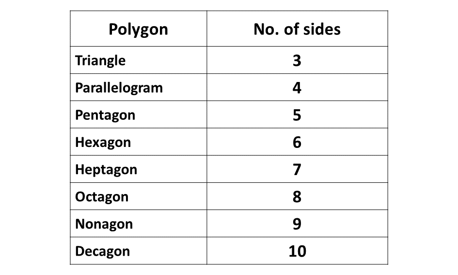
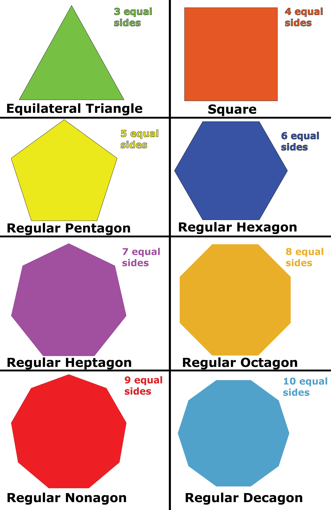
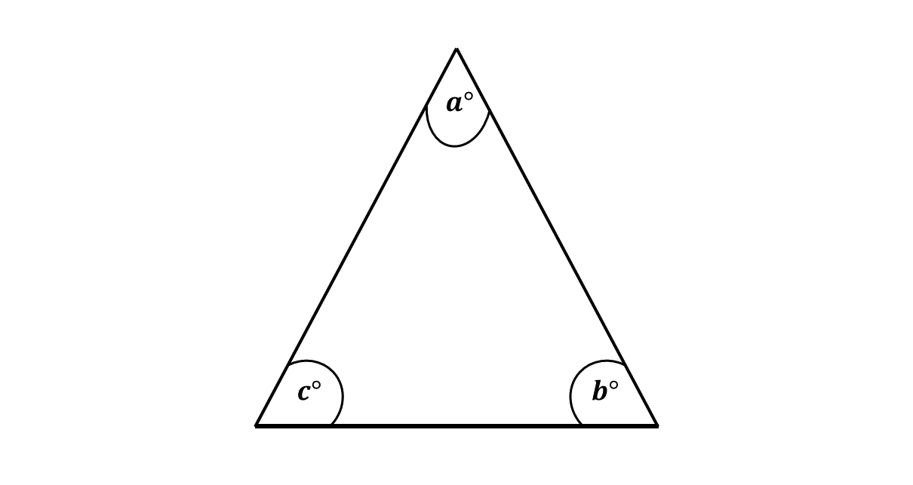
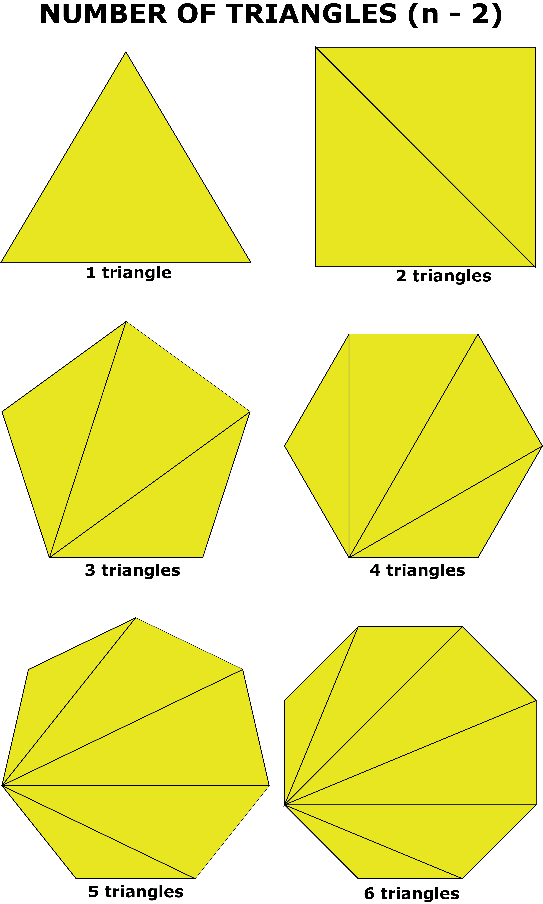
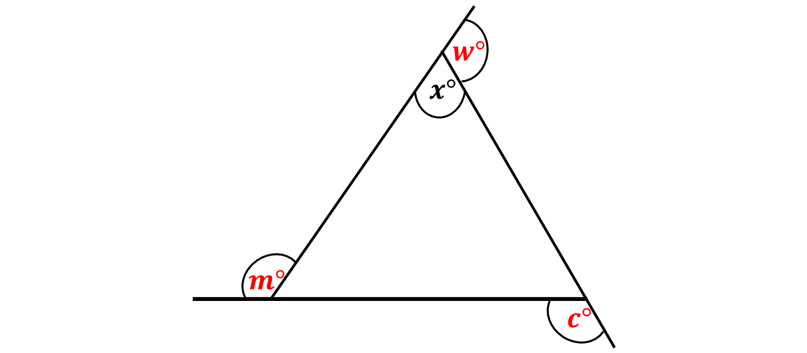
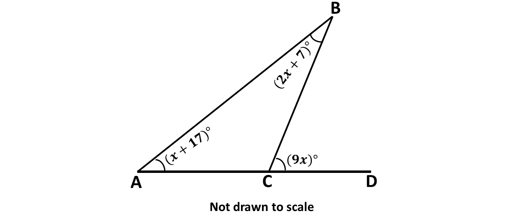
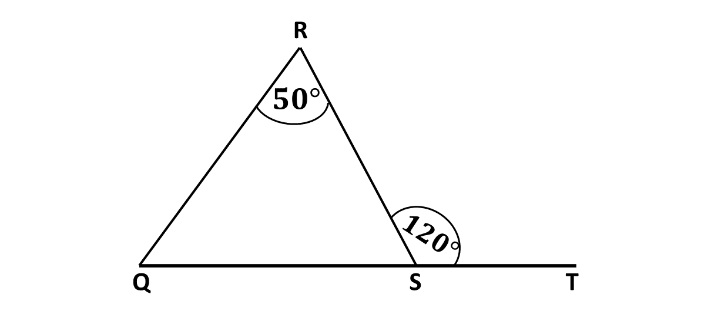

A polygon is any enclosed shape that has three or more sides. In our calculations when the number of sides is not known, we will represent the number of sides of the unknown polygon with the letter \((n)\).
Examples of polygons are triangle, parallelogram, pentagon, hexagon etc.
Below is a table of some of the various polygons and their number of sides.
Research:
Search on the internet, for more examples of polygons and share with your friend in school.
Regular Polygons
When a polygon has the length of all its sides being equal, we say that the polygon is a regular polygon. For instance, an equilateral triangle has all sides being equal, hence we say that an equilateral triangle is a regular polygon.
Similarly, a square has all four of its sides being equal, hence a square is also an example of a regular polygon.
The diagram below shows some of the regular polygons that we have.

Given any triangle, the total internal angles of the triangle will be \(180^\circ\). Total internal angles mean the angles formed inside of the triangle. Consider the diagram below:
The angles marked \(a, b\) and \(c\) are angles inside of the triangle. We usually call these angles internal angles or interior angles.
Hence,
\[a^\circ + b^\circ + c^\circ = 180^\circ\]
That is, total internal or interior angles of a triangle is \(180^\circ\).
Given any polygon, the number of triangles that can be drawn from the same vertex inside of the polygon is given by the expression below:
\[(n - 2)\]
Where \(n\) is the number of sides of the polygon.
\(*\) Triangle
A triangle has 3 sides, so the number of triangles that can be drawn from the same vertex is;
\[3 - 2 = 1\]
Hence, only one triangle can be created from the same vertex in a triangle.
\(*\) Parallelogram
A parallelogram has 4 sides, so the number of triangles that can be drawn from the same vertex is given as;
\[4 - 2 = 2\]
Hence, only two triangles can be created from the same vertex in a parallelogram. This is shown in the diagram below:
\(*\) Pentagon
A pentagon has 5 sides, so the number of triangles that can be drawn from the same vertex is given as;
\[5 - 2 = 3\]
Hence, only three triangles can be created from the same vertex in a pentagon. This is shown in the diagram below.
\(*\) Hexagon
A hexagon has 6 sides, so the number of triangles that can be drawn from the same vertex is given as;
\[6 - 2 = 4\]
Hence, only four triangles can be created from the same vertex in a hexagon. This is shown in the diagram below.
Consider the diagram below:

Remember:
When the number of sides of a polygon is given as \(n\), the number of triangles that can be drawn from the same vertex is given as; \[n - 2\]
So far, we have established that the number of sides of a polygon is represented by \(n\), and the number of triangles that can be drawn from the same vertex is given by \(n - 2\).
We also know that the total interior angles of any triangle is \(180^\circ\).
This implies that to find the total interior angles of any polygon, you need to multiply the number of triangles that can be drawn from the same vertex in the polygon by the total interior angles in a triangle.
This is described below:
Formular
Total interior angles of a triangle \(\Rightarrow 180^\circ\)
Number of sides of polygon \(\Rightarrow n\)
Number of triangles drawn \(\Rightarrow n - 2\)
\(\therefore\) Total interior angles of a polygon \(\Rightarrow (n-2) \times 180^\circ\)
Example 1
Find the total interior angles of a regular polygon with three sides.
Solution
Number of sides of polygon \(= 3\)
Total interior angles of polygon
\(\Rightarrow (n-2)\times180^\circ\)
\(\Rightarrow (3-2)\times180^\circ\)
\(\Rightarrow 1\times180^\circ\)
\(\Rightarrow 180^\circ\)
This proves our formular, as the total interior angles of a regular polygon with 3 sides is \(180^\circ\), which is the total angles inside of a triangle.
Example 2
Find the total interior angles of a regular polygon with 4 sides.
Solution
Number of sides of polygon \(= 4\)
Total interior angles of polygon
\(\Rightarrow (n-2)\times180^\circ\)
\(\Rightarrow (4-2)\times180^\circ\)
\(\Rightarrow 2\times180^\circ\)
\(\Rightarrow 360^\circ\)
This proves our formular, as the total interior angles of a regular polygon with 4 sides is \(360^\circ\), which is the total angles inside of a parallelogram.
Example 3
Find the total interior angles of a regular polygon with 5 sides.
Solution
Number of sides of polygon \(= 5\)
Total interior angles of polygon
\(\Rightarrow (n-2)\times180^\circ\)
\(\Rightarrow (5-2)\times180^\circ\)
\(\Rightarrow 3\times180^\circ\)
\(\Rightarrow 540^\circ\)
This proves our formular, as the total interior angles of a regular polygon with 5 sides is \(540^\circ\), which is the total angles inside of a pentagon.
Example 4
Find the total interior angles of a regular polygon with 6 sides.
Solution
Number of sides of polygon \(= 6\)
Total interior angles of polygon
\(\Rightarrow (n-2)\times180^\circ\)
\(\Rightarrow (6-2)\times180^\circ\)
\(\Rightarrow 4\times180^\circ\)
\(\Rightarrow 720^\circ\)
This proves our formular, as the total interior angles of a regular polygon with 6 sides is \(720^\circ\), which is the total angles inside of a hexagon.
Example 5
Find the total interior angles of a regular polygon with 7 sides.
Solution
Number of sides of polygon \(= 7\)
Total interior angles of polygon
\(\Rightarrow (n-2)\times180^\circ\)
\(\Rightarrow (7-2)\times180^\circ\)
\(\Rightarrow 5\times180^\circ\)
\(\Rightarrow 900^\circ\)
This proves our formular, as the total interior angles of a regular polygon with 7 sides is \(900^\circ\), which is the total angles inside of a heptagon.
Since the total interior angles in a regular polygon is given as \((n-2) \times 180^\circ \), in order to get the value of one interior angle, you will need to divide the total (or sum) of the interior angles by the number of sides of the polygon.
This is shown below.
Formular
Number of sides of polygon \(\Rightarrow n\)
Total interior angles of a polygon \(\Rightarrow (n-2) \times 180^\circ\)
\(\therefore\) Interior angle (or 1 interior angle) \(\Rightarrow \frac{(n-2) \times 180^\circ}{n}\)
The exterior angle of a polygon is the adjacent angle formed on the same line of the interior angle in question but outside of the polygon. These angles are supplementary to the interior angle, that is, the exterior angle and the interior angle add up to \(180^\circ\).
Consider the diagram below:
The angles marked \(c, m\) and \(w\) are all exterior angles.
To get the value of one exterior angle of a polygon, divide the the total angles in a full circle, \(360^\circ\) by the number of sides of the polygon, as shown below:
Formular
Number of sides of polygon \(\Rightarrow n\)
\(\therefore\) Exterior angle (or 1 exterior angle) \(\Rightarrow \frac{360^\circ}{n}\)
1. Total angles in a triangle \(\Rightarrow 180^\circ\)
2. Number of sides of polygon \(\Rightarrow n\)
3. Number of triangles \(\Rightarrow n - 2\)
4. Sum of interior angles in a polygon \(\Rightarrow (n - 2) \times 180^\circ\)
5. Interior angle \(\Rightarrow \frac{(n - 2) \times 180^\circ}{n}\)
6. Exterior angle of polygon \(\Rightarrow \frac{360^\circ}{n}\)
-
Find the value of \(x\) in the diagram below:
 -
The exterior angle of a polygon is 40 degrees, find the total interior angles of the regular polygon.
-
In the diagram, \(QRS\) is a triangle. Angle \(QRS = 50^\circ\) and angle \(RST = 120^\circ\). Find angle \(RQS\).
 -
Find the number of sides of a regular polygon whose interior angle measures \(160^\circ\).
-
The interior angle of a regular polygon is \(120^\circ\). How many sides has this polygon.
Test yourself on what you have learnt so far. Click on the link below when you are ready.
Kindly contact the administrator on 0208711375 for the link to the test.
To advertise on our website kindly call on 0208711375 or 0249969740.